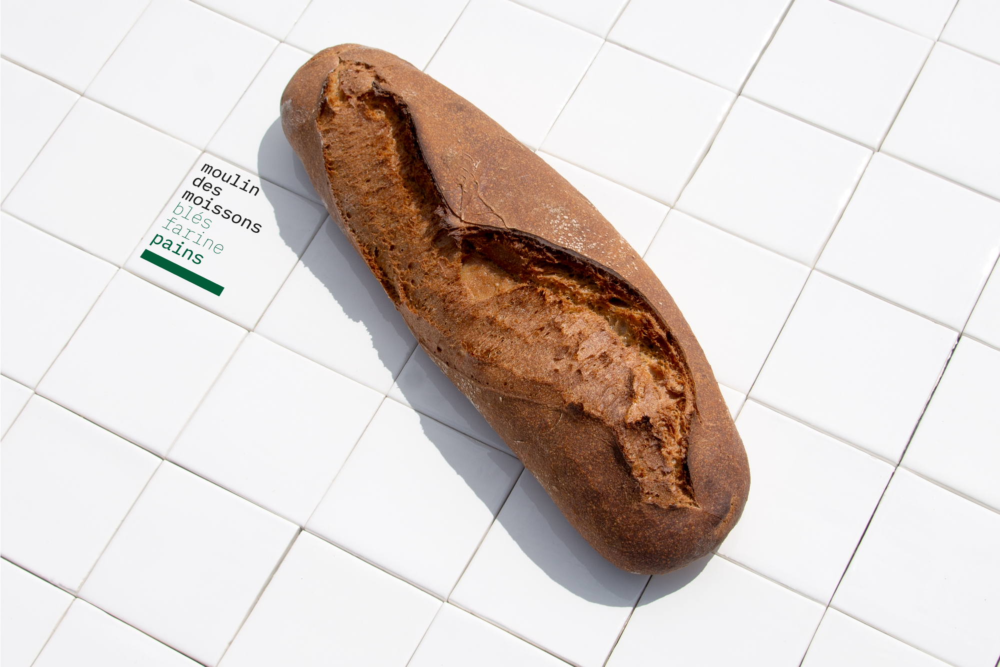
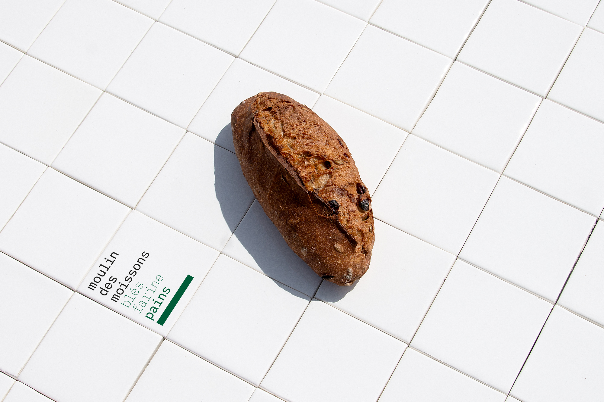
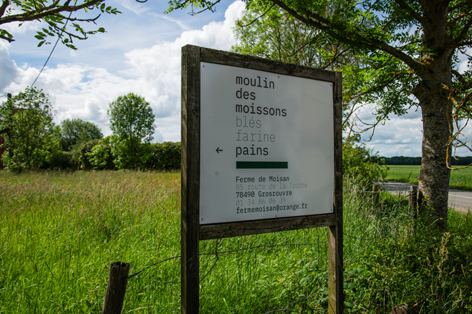

moulin
des
moissons
Réalisation de l'identité visuelle pour l'entreprise "moulin des moissons", producteur de blés, de farine et de pains au sein de la Ferme de Moisan située à Grosrouvre (78).
→ création du logotype + charte graphique
→ déclinaison sur bâches, étiquettes, emballages, tampon, panneaux, supports imprimés
→ direction artistique / photographique pour site internet → moulindesmoissons.fr



↑